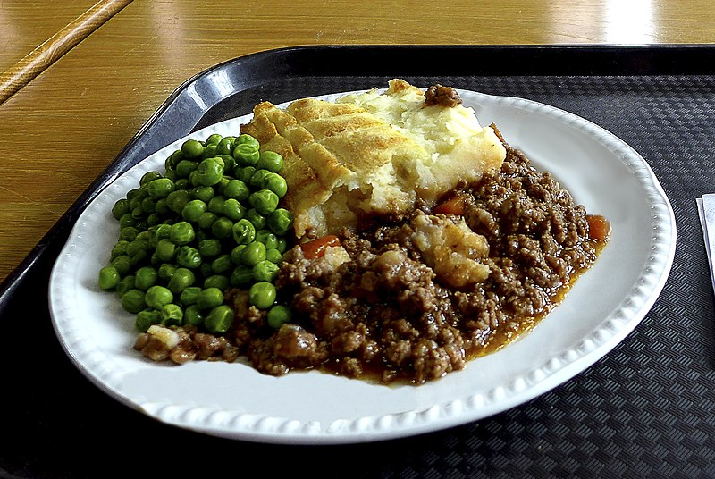
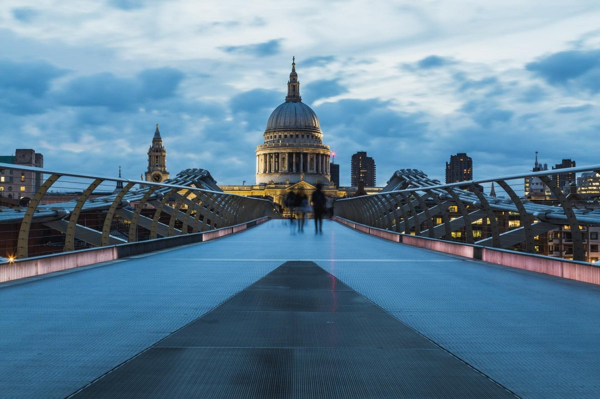
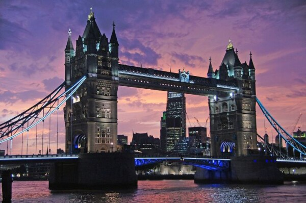

Визначні пам'ятки
Біг-Бен, Вестмінстерський палац і Тауерський міст відкривають різні сторінки історії британської столиці.

Кухня та гастрономія
Традиційний fish and chips, пироги та післяобідній чай допомагають відчути смак Лондона.

Культура та традиції
Безкоштовні музеї, театри Вест-Енду та церемоніальні події поєднують у Лондоні традиції й сучасність.

Особисті історії
Найяскравіший спогад — прогулянка вздовж Темзи до Тауерського мосту у вечірньому світлі.
